Создание игр в Roblox Studio
Программирование на Lua. Логические конструкции
Что такое логика?
Это занятие посвящено логическим конструкциям и их использованию в программировании. Все программы, которые мы писали до этого, являются просто набором команд, выполняющихся друг за другом - в них нет разнообразного выбора.
Однако, не все программы работают таким образом - очень часто нам нужно сделать так, чтобы программа самостоятельно приняла какое-то решение и выполнила, в зависимости от обстоятельств, одно или другое действие. Для этого используются логические конструкции, основанные на операторе if.
Логика в компьютерных играх
Если посмотреть на любую игру с точки зрения программиста, можно заметить, что очень многие действия зависят от окружающей среды. Например, если здоровье игрока становится меньше или равно нулю, игрок умирает. Если игрок подходит к предмету, который может поднять, он видит всплывающую подсказку, говорящую ему об этом. Если у игрока недостаточное количество денег и он пытается что-то купить в магазине, игра не даёт ему это сделать и говорит, что у него не хватает средств.
Логика - основная часть работы любой более-менее самостоятельной программы, рассчитанной на какую-то вариативность. Именно благодаря ей программист может предугадать действия игрока и дать ему возможность поступать множественными способами в различных ситуациях, будь то игры, программы, мобильные приложения или веб-сайты.
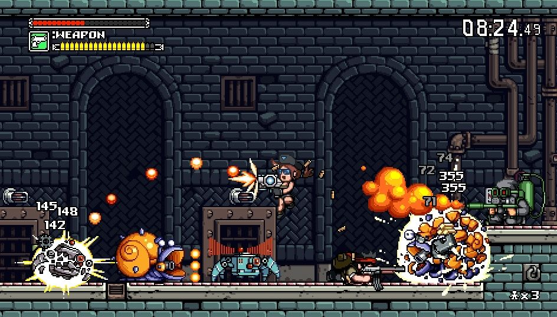Реализация логики в программировании. Команда If
Базовая структура команды if строится следующим образом:
if [условие] then
[действие]
end
Для лучшего понимания, можно дословно перевести написанное:
Если выполняется условие, тогда (и только тогда) выполнить действие.
Если условие не будет выполняться, программа просто проигнорирует строку с действием. Таким образом, благодаря команде if у нас появляется возможность добавлять действия, которые выполняются только в определенных ситуациях, что очень заметно расширяет возможности для программирования.
Простые условия. Сравнения
Рассмотрим несколько задач, в которых реализуется логика - например, происходит проверка условий.
Задача 1 - Сравнение двух величин
В Задаче 1 необходимо сравнить две переменные: А и В. Если переменная В будет больше переменной А, то нужно открыть дверь.
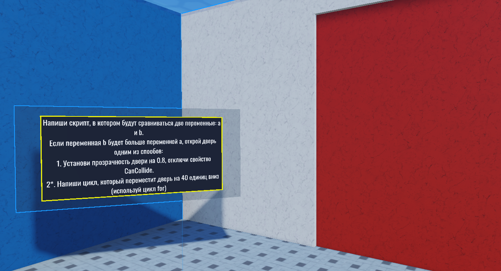Открыть дверь можно двумя способами:
Вариант 1. Установить параметр прозрачности на 0,8 и выключить свойство CanCollide, как мы делали это в первом занятии данного модуля.
Вариант 2. Написать цикл, опускающий дверь на 40 единиц по оси Y.
Создадим дочерний скрипт для двери и введём две переменные, которые будут сравниваться:
a = 15
b = 17
После этого напишем сравнение двух переменных через команду if.
Условие, при котором дверь должна открыться, написано прямо в задании: Если переменная В больше переменной А - тогда открыть дверь.
Так и запишем:

Чтобы наглядно продемонстрировать действие команды if, сперва вместо открытия двери напишем команду print, выводящую строку «b и вправду больше а!». Запустим команду - в окне Output выводится соответствующая строка. Если сделать значение переменной а больше значения b, условие не выполнится, и эта команда будет проигнорирована.
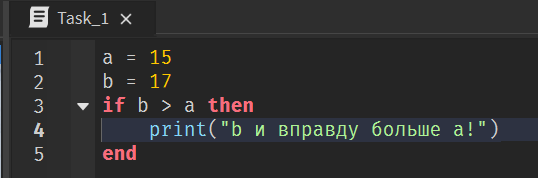Теперь удалим print и напишем код для открытия двери.
Вариант 1:
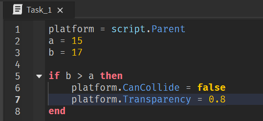Вариант 2:
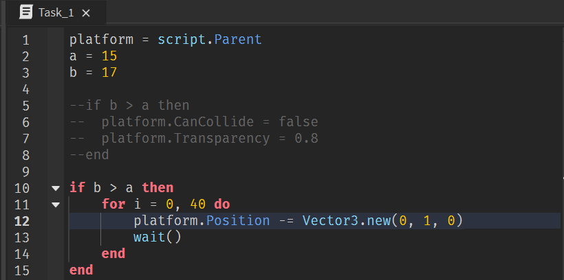Задача 2 - Разноцветный куб
Условие задачи и глобальные переменные
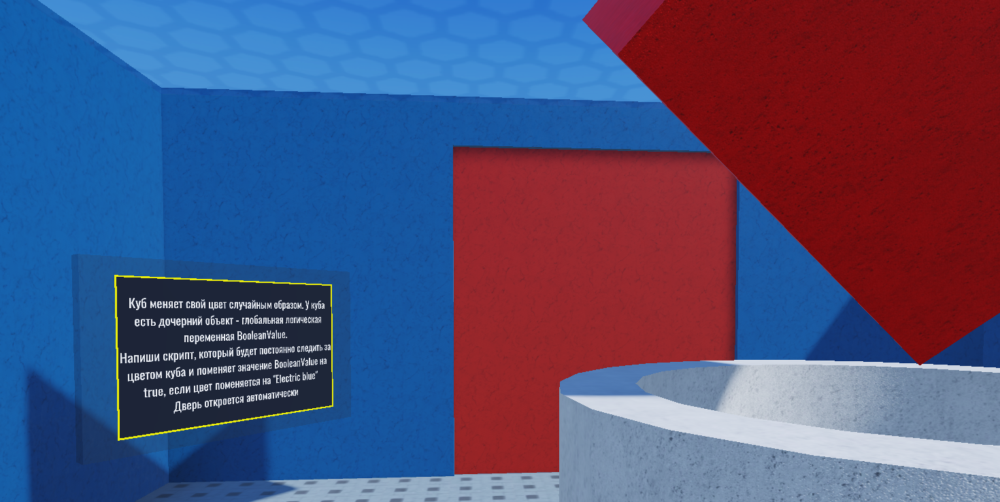Следующая задача будет сложнее. В центре комнаты находится куб, случайным образом меняющий свой цвет, он называется ColorCube. Нужно открыть дочерние объекты этого куба в окне Explorer, внутри можно найти два заранее написанных скрипта, знакомых нам по первому модулю.
Важно! Нельзя удалять и изменять эти скрипты, иначе задачу не получится решить.
Также в дочерних объектах вы можете найти объект, который называется BooleanValue. Это внешняя переменная - с помощью таких объектов мы можем хранить какие-то значения вне скриптов и передавать друг между другом. То есть это внешнее хранилище, в которое скрипт может что-то положить для того, чтобы другой скрипт мог потом это использовать.
К сожалению, в Roblox нет такой вещи как глобальная переменная и вместо них используются именно такие объекты. BooleanValue используется здесь для того, чтобы автоматический скрипт смог открыть дверь, когда это значение примет значение true. По условию задачи, именно это мы и должны сделать в тот момент, когда куб поменяет свой цвет на Electric Blue.
Логические переменные и их значения. True / False
Логическое значение - это специальный тип данных, объясняющий программе, что что-то включено или выключено, нужно ли что-то делать или нет.
Например, если подойти к стене и нажать на выключатель в комнате, то свет выключится. Если нажать на него ещё раз, свет включится. С точки зрения программирования, изменяется переменная, которая сообщает главной программе, включён свет или нет.
Любая логическая переменная - это ответ на вопрос. Вы делаете какое-то утверждение и Roblox проверяет, верно оно или нет. Если условие верно, переменная примет значение true, в противном случае - false.
Написание скрипта
Создадим для куба дочерний скрипт и введём все необходимые переменные:
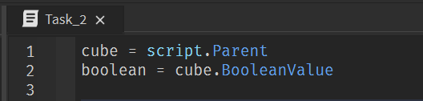По условию задачи значение переменной Boolean Value должно измениться на true, когда цвет куба, то есть его параметр BrickColor, станет равен Electric Blue.
Мы можем сравнивать две различные величины при помощи операторов сравнения, их всего 6:
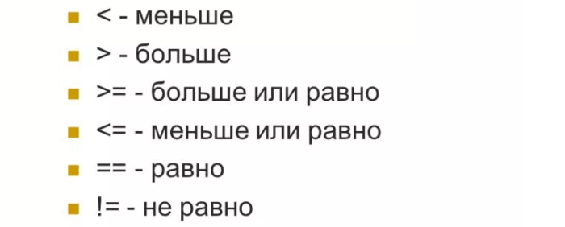Как и в предыдущем задании, напишем условие, которое будет сравнивать два значения, но в этот раз величины будут не численными, а цветовыми.
Сравним цвет куба и искомый цвет:
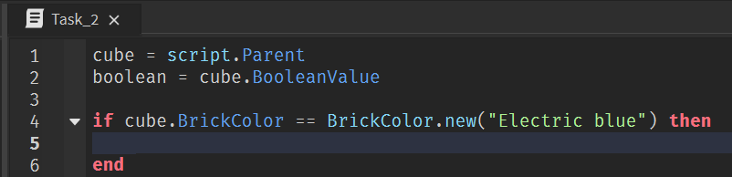Если условие выполнится, мы должны изменить значение внешней переменной BooleanValue. Если просто добавить эту строку кода, то, даже если куб примет искомый цвет, ничего не произойдёт: действие if выполнится один раз в момент запуска игры, затем, убедившись, что куб неправильного цвета, перестанет выполняться и не запустится вновь.
Чтобы постоянно отслеживать, не произошло ли нужное нам событие, добавим бесконечный цикл и завершим программу:
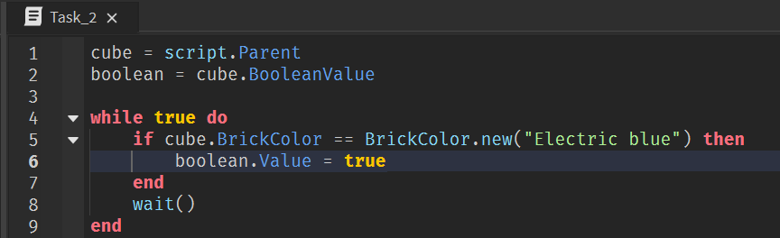Сложные условия
Задача 3 - Объединение нескольких условий в одно
В этой задаче необходимо объединить несколько условий в одно и выполнить действия только в том случае, если выполняются все условия одновременно. Помимо проверки одного условия, мы можем делать систему из различных условий, используя специальное логические операторы or и and - логические «и» и «или».
Использование оператора and:
Оператор И (&&, and) (логическое умножение, или конъюнкция) используется, когда необходимо объединить несколько условий. Выражение с И вернёт значение true только в том случае, если все логические высказывания, которые им объединены, тоже истинны. Если это условие не выполняется, то результатом станет значение false.
Использование оператора or:
Оператор ИЛИ (||, or) (логическое сложение, или дизъюнкция) используется, когда нужно проверить, выполняется ли хотя бы одно из нескольких условий. Он возвращает значение true в том случае, когда верно хотя бы одно из логических выражений (если верны оба выражения, то вернётся также true). False станет результатом выполнения только в том случае, когда оба выражения ложны.
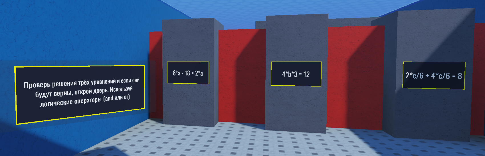Создадим для группы Task3 дочерний скрипт и в нём создадим три переменные - это 3 неизвестных, которые используются в уравнениях (а, b и с):
a = 1
b = 1
c = 1
Для того, чтобы найти правильное значение каждой из этих переменных, необходимо будет решить уравнение, в котором она используется.
Как и в математике, чтобы проверить верность найденного решения, мы должны вычислить уравнение, подставив в него полученное значение. В программировании компьютер сделает это самостоятельно - всё, что нужно сделать - просто записать уравнение через сравнение на равенство.
Введём три новые логические переменные, в которые будут записаны результаты проверок найденных решений - если в числовой переменной (a,b,c) стоит правильное число, то значение логической переменной будет true, так как уравнение будет посчитано верно:
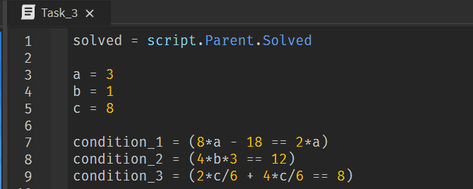Отлично! Проверка найденных значений написана. Осталось объединить полученные условия в одно общее условие при помощи логических операторов, и в случае одновременного их выполнения изменить значение внешней переменной Solved на true, чтобы открыть дверь:
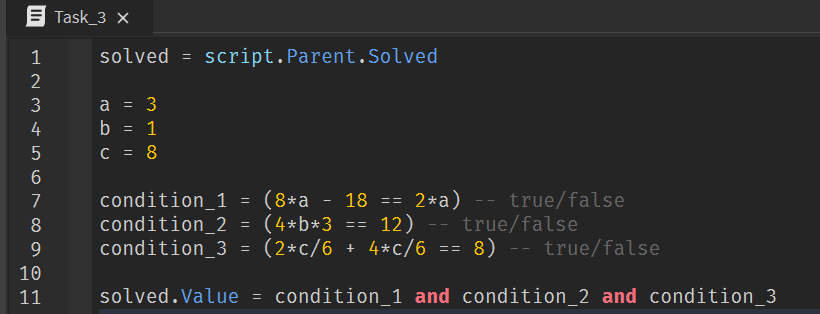Домашкаа 😁
Задача 4 - Лабиринт

В этом задании необходимо пройти по лабиринту и собрать все монетки, спрятанные в нём (суммарное количество монеток - 5).
При этом нужно прописать в скрипте код, с помощью которого персонаж, каждый раз поднимая монетку, будет увеличивать значение внешней переменной Coins на 1. Как только количество монеток станет равно 5, значение внешней логической переменной Open должно измениться на true.